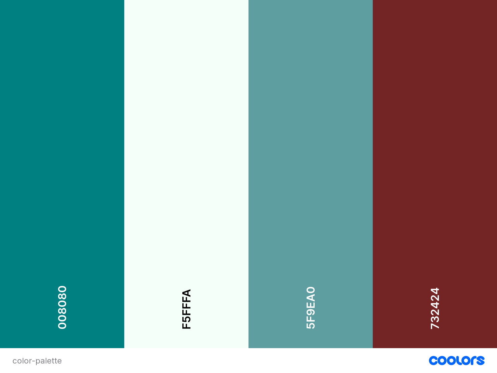

Aguascalientes City Chamber of Commerce Site Project
Color Schema

| Primary |
|
Teal |
Site Header, Footer & Navigation Bar |
| Secondary |
|
Mintcream |
Background |
| Accent color |
|
Cadetblue |
Heading 1-2 (h1-h2) |
| Accent color |
|
Falured |
Highlight |
Typography
| Item |
Font-Name |
Font-Size |
Color/Background |
Text Sample |
| Site Header |
Roboto Slab |
0.9rem |
Teal |
Sample |
| Navbar |
Roboto |
0.6rem |
Mintcream |
Sample |
| Heading & Paragraph |
Roboto |
0.5rem |
Falured |
Sample |
| Hover |
Roboto |
0.5rem |
Cadetblue |
Sample |